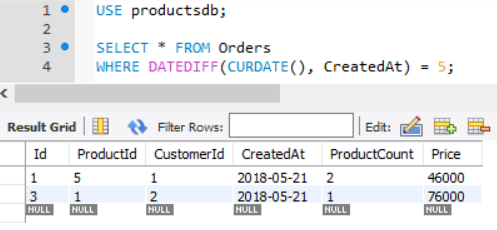

Funcții pentru lucrul cu date și timp.
MySQL dispune de o serie de funcții încorporate pentru lucrul cu date
și timp.
Obținerea datei și a timpului.
Funcțiile pentru lucrul cu date și timp în MySQL sunt utile
pentru manipularea și formatarea datelor temporale. Mai jos sunt exemple de utilizare a unor astfel de
funcții:
Funcțiile CURDATE și CURRENT_DATE returnează
data curentă locală sub formă de obiect date:
|
SELECT CURRENT_DATE(); -- 2018-05-25
SELECT CURDATE();
-- 2018-05-25
|
Funcțiile CURTIME și CURRENT_TIME returnează
timpul curent local sub formă de obiect time:
|
SELECT CURRENT_TIME(); --
20:47:45
SELECT CURTIME();
-- 20:47:45
|
UTC_DATE returnează data locală
curentă în raport cu GMT:
|
SELECT UTC_DATE(); --
2018-05-25
|
UTC_TIME returnează timpul local curent
în raport cu GMT:
|
SELECT UTC_TIME();
-- 17:47:45
|
-- Obținerea datei și timpului
|
SELECT NOW();
-- 2018-05-25 21:34:55
SELECT SYSDATE(); -- 2018-05-25
21:34:55
SELECT CURRENT_TIMESTAMP();
-- 2018-05-25 21:32:55
SELECT CURRENT_DATE(); -- 2018-05-25
SELECT CURDATE(); -- 2018-05-25
SELECT CURRENT_TIME(); -- 20:47:45
SELECT CURTIME(); -- 20:47:45
SELECT UTC_DATE(); --
2018-05-25
SELECT UTC_TIME(); -- 17:47:45
|
-- Parsarea datei și timpului
|
DAYOFMONTH(date) --
returnează ziua lunii sub formă de valoare numerică
DAYOFWEEK(date) --
returnează ziua săptămânii sub formă de valoare
numerică
DAYOFYEAR(date) -- returnează numărul zilei din an
MONTH(date)
-- returnează luna
datei
YEAR(date)
-- returnează anul din data dată
QUARTER(date) --
returnează numărul trimestrului din an
WEEK(date [, first])
-- returnează numărul săptămânii din
an. Parametrul opțional permite specificarea zilei de început a
săptămânii. Dacă acest parametru este 1, atunci prima zi este
considerată a fi luni, în caz contrar duminica
LAST_DAY(date) --
returnează ultima zi a lunii sub formă de dată
DAYNAME(date) --
returnează numele zilei săptămânii
MONTHNAME(date) --
returnează numele lunii curente
HOUR(time)
-- returnează ora din timp
MINUTE(time) --
returnează minutul din timp
SECOND(time)
-- returnează secunda din timp
|
|
SELECT DAYOFMONTH('2018-05-25'); --
25
SELECT DAYOFWEEK('2018-05-25'); --
6
SELECT DAYOFYEAR('2018-05-25'); --
145
SELECT MONTH('2018-05-25'); -- 5
SELECT YEAR('2018-05-25');
-- 2018
SELECT QUARTER('2018-05-25');
-- 2
SELECT WEEK('2018-05-25', 1); --
21
SELECT LAST_DAY('2018-05-25'); -- 2018-05-31
SELECT DAYNAME('2018-05-25'); -- Friday
SELECT MONTHNAME('2018-05-25'); -- May
SELECT HOUR('21:25:54');
-- 21
SELECT MINUTE('21:25:54');
-- 25
SELECT SECOND('21:25:54');
-- 54
|
- Funcția EXTRACT
|
EXTRACT(SECOND FROM datetime) -- extrage secunda din dată și timp
EXTRACT(MINUTE FROM datetime) -- extrage minutul din dată și timp
EXTRACT(HOUR FROM datetime) -- extrage ora din dată și timp
EXTRACT(DAY FROM datetime) -- extrage ziua din dată și timp
EXTRACT(MONTH FROM datetime) -- extrage luna din dată și timp
EXTRACT(YEAR FROM datetime) -- extrage anul din dată și timp
EXTRACT(MINUTE_SECOND FROM datetime) -- extrage
minutul și secunda din dată și timp
EXTRACT(HOUR_MINUTE FROM datetime) --
extrage ora și minutul din dată și timp
EXTRACT(DAY_HOUR FROM datetime) -- extrage ziua și ora din dată și timp
EXTRACT(YEAR_MONTH FROM datetime) --
extrage anul și luna din dată și timp
EXTRACT(HOUR_SECOND FROM datetime) --
extrage ora, minutul și secunda din dată și timp
EXTRACT(DAY_MINUTE FROM datetime) --
extrage ziua, ora și minutul din dată și timp
EXTRACT(DAY_SECOND FROM datetime) --
extrage ziua, ora, minutul și secunda din dată și timp
|
|
SELECT EXTRACT(SECOND FROM '2018-05-25 21:25:54'); -- 54
SELECT EXTRACT(MINUTE FROM '2018-05-25 21:25:54');
-- 25
SELECT EXTRACT(HOUR FROM '2018-05-25
21:25:54'); -- 21
SELECT EXTRACT(DAY FROM '2018-05-25 21:25:54'); -- 25
SELECT EXTRACT(MONTH FROM '2018-05-25 21:25:54');
-- 5
SELECT EXTRACT(YEAR FROM '2018-05-25
21:25:54'); -- 2018
SELECT EXTRACT(MINUTE_SECOND FROM '2018-05-25
21:25:54'); -- 2554
SELECT EXTRACT(DAY_HOUR FROM '2018-05-25 21:25:54');
-- 2521
SELECT EXTRACT(YEAR_MONTH FROM '2018-05-25 21:25:54'); --
201805
SELECT EXTRACT(HOUR_SECOND
FROM '2018-05-25
21:25:54'); -- 212554
SELECT EXTRACT(DAY_MINUTE FROM '2018-05-25 21:25:54');
-- 252125
SELECT EXTRACT(DAY_SECOND FROM '2018-05-25 21:25:54'); -- 25212554
|
-- Funcții pentru manipularea cu
datele
|
Un set de
funcții permit realizarea operațiilor de adunare și scădere cu datele
și timpul:
DATE_ADD(date, INTERVAL expression unit): returnează un
obiect DATE sau DATETIME, care este
rezultatul adunării datei date cu un anumit interval de timp. Intervalul este specificat cu ajutorul expresiei INTERVAL unit, unde INTERVAL furnizează cuvântul cheie,
expression - numărul de
unități adăugate la dată, iar unit - tipul unităților (ore, zile
etc.). Parametrul unit poate avea aceleași valori ca și în funcția
EXTRACT, adică DAY, HOUR etc.
DATE_SUB(date, INTERVAL expression unit): returnează un
obiect DATE sau DATETIME, care este
rezultatul scăderii din data date a unui
anumit interval de
timp.
DATEDIFF(date1, date2):
returnează diferența în zile între datele date1 și
date2.
TO_DAYS(date): returnează numărul de zile de la anul 0.
TIME_TO_SEC(time): returnează numărul de secunde care au trecut de la miezul
nopții.
|
|
SELECT DATE_ADD('2018-05-25', INTERVAL 1 DAY);
-- 2018-05-26
SELECT DATE_ADD('2018-05-25', INTERVAL 3 MONTH);
-- 2018-08-25
SELECT DATE_ADD('2018-05-25 21:31:27',
INTERVAL 4 HOUR); -- 2018-05-26 01:31:27
SELECT DATE_SUB('2018-05-25', INTERVAL 4 DAY);
-- 2018-05-21
SELECT DATEDIFF('2018-05-25', '2018-05-27');
-- -2
SELECT DATEDIFF('2018-05-25', '2018-05-21');
-- 4
SELECT DATEDIFF('2018-05-25', '2018-03-21');
-- 65
SELECT TO_DAYS('2018-05-25');
--
737204
SELECT TIME_TO_SEC('10:00');
-- 36000
|
-- Formatarea datei și timpului
|
-- Formatarea datelor și timpului
DATE_FORMAT(date, format): returnează un obiect DATE sau DATETIME,
formatat cu ajutorul șablonului specificat.
TIME_FORMAT(date, format):
returnează un obiect TIME sau DATETIME, formatat cu ajutorul șablonului
specificat.
Ambele funcții primesc ca al doilea parametru un șir de formatare
sau șablon, care indică modul în care să fie formatat valoarea. Acest
șablon poate include următoarele valori:
%m: lună în format numeric
01..12
%c: lună în format numeric 1..12
%M: numele lunii
(January...December)
%b: abrevierea lunii (Jan...Dec)
%d: ziua lunii în
format numeric 00..31
%e: ziua lunii în format numeric 0..31
%D:
numărul zilei a lunii cu sufix (1st, 2nd, 3rd...)
%y: anul în formatul a
două cifre
%Y: anul în formatul a patru cifre
%W: numele zilei a
săptămânii (Sunday...Saturday)
%a: abrevierea zilei a
săptămânii (Sun...Sat)
%H: oră în format 00..23
%k:
oră în format 0..23
%h: oră în format 01..12
%l: oră
în format 1..12
%i: minute în format 00..59
%r: timp în formatul
a 12 ore (hh:mm:ss AM sau PM)
%T: timp în formatul a 24 de ore
(hh:mm:ss)
%S: secunde în format 00..59
%p: AM sau PM
|
|
SELECT DATE_FORMAT('2018-05-25', '%d/%m/%y');
-- 25/05/18
SELECT DATE_FORMAT('2018-05-25 21:25:54',
'%d %M %Y'); -- 25 May 2018
SELECT DATE_FORMAT('2018-05-25 21:25:54', '%r'); -- 09:25:54 PM
SELECT TIME_FORMAT('2018-05-25 21:25:54', '%H:%i:%S'); --
21:25:24
SELECT TIME_FORMAT('21:25:54', '%k:%i');
-- 21:25
|
Exemplu de găsire a comenzilor efectuate acum 5 zile:
|
SELECT * FROM Orders
WHERE DATEDIFF(CURDATE(), CreatedAt) = 5;
|
